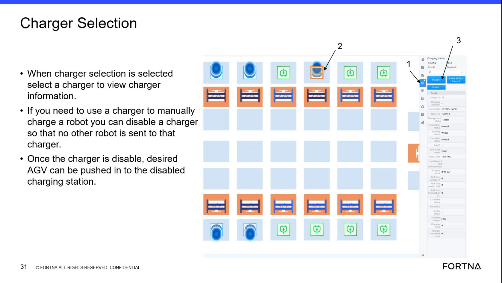

| Procedure ID | proc_disable_enable_charger_location_rms_charger_selection_manual_charge_v1 |
|---|---|
| Title | Disable/Enable a Charging Location From RMS Charger Selection to Manually Charge a Low-Power AGV |
| Procedure Type | recovery |
| Primary Role | L2_support |
| Support Safe | Yes |
| Capability Tags | agv_charging_state |
| Access Surface | rms_ui |
| Audience Roles | L2_support |
| Failure Pattern Tags | None |
| Validation Status | needs_sme_review |
| Merge Status | source_finalized |
Use RMS Charger Selection to logically disable a specific charging location (by charger ID) so RMS will not route AGVs to it. Physically place a low-power AGV onto that disabled charger for a charging boost, then re-enable the charger so RMS/WCS can resume charging allocation from the charging queue.
When an AGV’s power is extremely low (e.g., stuck in an error state too long) and you need to manually place it onto a charger for a charging boost by preventing RMS from routing other AGVs to that charger.

Responsible role: L2_support
Instruction:
In the RMS / fleet status UI (rms_ui), navigate to the Charger Selection view.
Expected result:
The Charger Selection view is open and shows charging stations with unique charger IDs available for selection.
Responsible role: L2_support
Instruction:
In Charger Selection, click/select the target charging station using its unique charger ID.
Expected result:
The selected charger’s details are displayed for the chosen charger ID.
Responsible role: L2_support
Instruction:
Check the selected charger’s status field/label to determine whether it is currently enabled or disabled.
Expected result:
The selected charger shows a status indicating enabled vs disabled.
Responsible role: L2_support
Instruction:
If the charger is currently enabled and you need to manually charge the low-power AGV, click Disable for that charging location in the Charger Selection details panel.
Expected result:
The charger allocation is logically disabled (status changes to disabled).
Stop or Escalate If:
Responsible role: L2_support
Instruction:
In Charger Selection details for the selected charger, confirm the status now indicates disabled.
Expected result:
The selected charger status shows disabled.
Stop or Escalate If:
Responsible role: L2_support
Instruction:
Physically push/position the low-power AGV into the disabled charging station (the charger remains physically present; it is logically unavailable for routing).
Expected result:
The low-power AGV is physically placed into the disabled charging station.
Responsible role: L2_support
Instruction:
After the AGV is placed on the disabled charger, remove the AGV from the disabled charger once it has picked up a task and is going to the hospital in that tote (as described in the use case flow).
Expected result:
The AGV picks up a task and proceeds to the hospital in that tote; then the AGV is removed from the disabled charger.
Stop or Escalate If:
Responsible role: L2_support
Instruction:
In Charger Selection, click Enable for that charger in the Charger Selection details panel.
Expected result:
The charger allocation is logically re-enabled (status changes back to enabled).
Stop or Escalate If:
Responsible role: L2_support
Instruction:
Confirm the selected charger’s status in Charger Selection now indicates enabled.
Expected result:
The selected charger status shows enabled.
Stop or Escalate If: